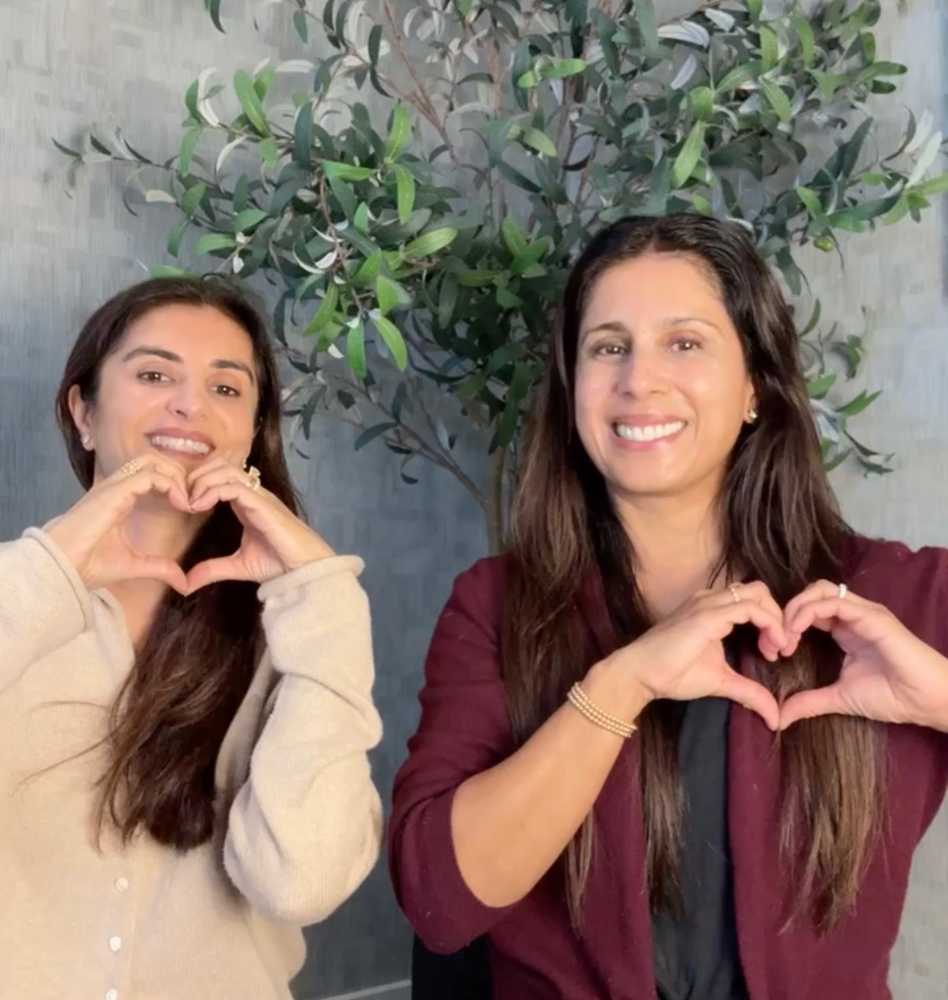

A Sacred Shift
From Overwhelm
to Grounded
Freedom
A yoga-based journey rooted in awareness,
reflection, and transformation.
Awareness · Reflection · Transformation
Join Our Inner Circle
A Sacred Shift
A yoga-based journey rooted in awareness,
reflection, and transformation.
Awareness · Reflection · Transformation
Join Our Inner Circle
Our Mission
Ami and Vicky, co-founders of A Sacred Shift, are Indian-born practitioners cultivating a global community rooted in yoga and dedicated to personal growth and transformation. Their mission is to partner with members and guide them from feeling overwhelmed and on autopilot to feeling calm, grounded, and free.
Notice what is — without judgment. The first step to any meaningful shift begins with seeing clearly.
Slow down long enough to ask the deeper questions. Reflection is where insight lives.
Real, lasting change. Not just on the mat — in the way you move through your entire life.

Meet the Founders
A Sacred Shift was born in March 2025 in Miami, FL — rooted in a shared belief that yoga is far more than a physical practice. It is a pathway to self-awareness, deep rest, and a life lived with intention.
Ami and Vicky bring their Indian heritage and global perspective into every class, coaching session, and workshop they lead. Their approach is grounded, warm, and deeply personal — meeting each student exactly where they are.
Whether you are stepping onto the mat for the first time or deepening a lifelong practice, Ami and Vicky are here to walk alongside you.
Get in TouchA private yoga class tailored entirely to you — your body, your pace, your practice.
The same personalized experience, from the comfort of your own space — anywhere in the world.
Need a thought partner? Looking for accountability and structure? Start with a free 15-minute coaching call and see where it leads.
Monthly group sessions built around seasonal themes — a space to reflect, connect, and grow alongside a like-minded community.
Immersive, theme-based workshops designed to go deeper. Current offerings include:
A Sacred Shift Reflection Circles
Make space to reflect. Open yourself to new perspectives. Grow together.
Join Our Reflection CircleReflection Circles are an online community for reflection, self-discovery, and meaningful connection. They're guided group experiences that bring people together to explore life's questions, share experiences, and learn from different perspectives.
Through thoughtful prompts, guided reflection, and open conversations, you'll have space to slow down, gain new insights, and connect with a community of people who are also making space for personal growth.
Each month, we explore a shared theme through guided reflection and conversation. As a member, you'll have access to:
A place to share reflections, exchange perspectives, and stay connected with other members.
A topic to explore and reflect on throughout the month.
Thoughtful guidance to help you explore the theme and connect with your own experiences.
Questions and invitations to help you pause, reflect, and put your thoughts into words.
You can participate at your own pace. There's no expectation to have everything figured out or to have the perfect thing to say. Just bring an open mind and a willingness to reflect.
So much of personal growth happens through the way we see ourselves, but also through the people we meet and the perspectives we encounter.
When we make space for honest conversations and listen to experiences different from our own, we can discover new ways of thinking, recognize things we may not have noticed before, and feel a little less alone in what we're navigating.
Our community brings together people from different backgrounds and corners of the world, united by a shared desire to live more intentionally, understand themselves more deeply, and connect meaningfully with others.
Personal growth doesn't have to happen alone.
The Foundations of Our Approach
We believe meaningful growth begins with becoming more aware of ourselves and our experiences. Through reflection, we create space to explore what we're learning, question old perspectives, and open ourselves to new possibilities.
Over time, those small moments of awareness can shape the way we move through life.
$30per month
You don't need to have everything figured out. You just need to be open to exploring, reflecting, and growing alongside others.
Your Membership Includes
Make space for yourself. Open yourself to new perspectives. Grow together.
The Community
We are a global community with Indian roots — practitioners, seekers, and everyday people who have chosen to step off autopilot and begin a journey toward greater awareness. Whether you are new to yoga or deepening a lifelong practice, there is a place for you here.
Every month, we gather virtually and in person to explore seasonal themes, share our reflections, and support one another through the shifts that matter most. This is not just a yoga program. It is a community built on trust, curiosity, and the courage to grow.
Join Our Inner Circle
Get in Touch
Reach out to book a session, ask a question, or just say hello.
planningasacredshift@gmail.com